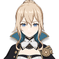

Anemo

Jean
The daughter of Frederica Gunnhildr and Seamus Pegg, the older sister of Barbara, and a descendant of the prestigious Gunnhildr Clan, Jean is the Acting Grand Master of the Knights of Favonius. She is always busy handling unrest across Mondstadt and of course, tirelessly working to maintain the City of Freedom.

Kaedehara Kazuha
A wandering samurai of the once-famed Kaedehara Clan, Kazuha is a temporary crewmember of The Crux.
Sayu
A ninja from the Shuumatsuban that is struggling with growing tall. Sayu believes that sleeping can help her growth, which is why she prefers to use her ninja techniques to hide and "laze around."


Sucrose
An alchemist specializing in bio-alchemy, she also serves as an assistant for Albedo, the head alchemist of the Knights of Favonius.

Traveler
At the beginning of the game, both genders are twin siblings from another world, traveling throughout the universe, until an unknown god blocked and captured one of them, and sealed their power to travel, leaving them stranded on Teyvat. They are accompanied by a travel companion named Paimon throughout their journey.
Venti
He is a free-spirited, wine-loving bard in Mondstadt and the current mortal vessel of Barbatos, the Anemo Archon. He first appears during the Archon Quest Prologue: Act I - The Outlander Who Caught the Wind.
Xiao
He is an adeptus, under the name Alatus, and the only known remaining member of the five foremost Yakshas dispatched by Morax to subdue the demonic spirits that plagued Liyue. He currently resides in Wangshu Inn and mostly secludes himself from crowds and human interactions.